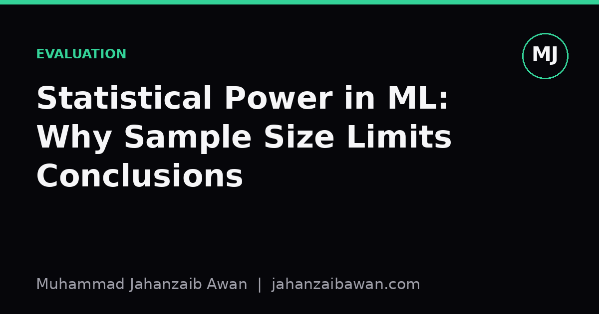

Statistical Power in ML: Why Sample Size Limits Conclusions
A smaller test set does not just add noise, it caps the size of the effect you are even capable of detecting. Here is why that matters for every model comparison you run.

The question nobody asks before running the experiment
Most ML practitioners report an accuracy gain, attach a p-value or a confidence interval, and move on. Very few ask the prior question: given my test set size, was I even capable of detecting the effect I claimed to find? That question is about statistical power, the probability that a test correctly rejects a false null hypothesis when a real effect of a given size exists. If your experiment is underpowered, a null result tells you almost nothing, and a positive result is more likely to be an inflated fluke than a genuine signal.
This matters more in ML than in many other fields because test sets are often small relative to the effect sizes we care about. A one point accuracy improvement on a benchmark with twenty thousand examples is a different claim, statistically, from the same one point improvement on a benchmark with three hundred examples. The headline number looks identical. The evidential weight behind it is not. Treating both as equally meaningful is one of the quieter ways published results fail to replicate.
I find it useful to think of power as answering a practical question: if my new method truly improves accuracy by X percentage points, how often would my evaluation setup actually notice? If the answer is 'thirty percent of the time', then a single run showing no improvement is close to uninformative, and a single run showing improvement should be treated with real suspicion until replicated.
A worked example with numbers that actually matter
Suppose you are comparing two classifiers on a held-out test set of 400 examples, and the true but unknown difference in accuracy is 2 percentage points, say 86 percent versus 88 percent. Using a standard approximation for comparing two proportions, the standard error of the difference is roughly the square root of p(1-p)/n added for each model, which here comes out to around 2.3 percentage points. Your estimated difference of 2 points sits inside one standard error of zero. With this sample size and this true effect, you would detect statistical significance at the conventional threshold only a modest fraction of the time, well under half, even though the effect is genuinely real.
Now scale the test set to 4,000 examples, ten times larger. The standard error shrinks by roughly the square root of ten, down to about 0.73 percentage points. The same 2 point true difference is now nearly three standard errors from zero, comfortably detectable in the large majority of repeated experiments. Nothing about the models changed. Only the sample size changed, and with it, the experiment's capacity to tell you the truth.
This is the uncomfortable part: with the 400 example test set, if you happened to observe a significant result anyway, it is more likely to be an overestimate of the true effect, sometimes called the winner's curse or effect size inflation. Underpowered studies that do clear the significance bar tend to report inflated effects, because only the lucky high-end draws from the sampling distribution cross the threshold. So small test sets do not just risk missing real improvements, they also distort the few positive results that do appear.
The practical rule I use is to work backwards from the smallest effect size I actually care about before running the comparison, then check whether my test set size gives reasonable power, conventionally around 80 percent, to detect it. If it does not, I either grow the evaluation set, run multiple seeds and aggregate, or explicitly lower my claims to 'suggestive, needs replication' rather than 'improvement found'.

Why this gets worse with repeated comparisons and leaderboard chasing
Power problems compound when you run many comparisons and report the best one. If you train ten model variants and report whichever one beats the baseline by the widest margin on a modest test set, you are effectively sampling from the tail of noisy estimates and calling it signal. Even with no true difference between any of the variants and the baseline, pure sampling variation guarantees that some variant will look best. Small test sets, with their wide standard errors, make this effect dramatic, because the noise band is wide enough for almost any ranking to occur by chance.
This is exactly the mechanism behind leakage-adjacent problems I care about a lot: tuning hyperparameters or model selection decisions on the same small test set you then report results on. It is not literal data leakage, but it has a similar effect, it lets noise masquerade as improvement. A disciplined separation between a validation set used for selection and a held-out test set used once for final reporting helps, but it does not fix underpowering; it only stops you from compounding it with selection bias on top.
There is also a size asymmetry worth naming directly. Detecting a 5 point improvement needs far fewer examples than detecting a 0.5 point improvement, because required sample size scales roughly with the inverse square of the effect size you want to resolve. This is why papers claiming large, dramatic gains on small benchmarks are often more credible on power grounds than papers claiming tiny gains on similarly small benchmarks, even though the tiny-gain claim sounds more modest and therefore more believable at a glance. Modesty of the claimed effect does not excuse you from the arithmetic of what your sample size can support.
What to actually do about it
Before running a comparison, decide the minimum effect size that would be practically meaningful, not just statistically convenient. Then do a rough power calculation, even a back-of-envelope one using the formulas for comparing two proportions or two means, to check whether your test set is large enough to detect that effect with reasonable reliability. If it is not, treat single-run results as exploratory rather than confirmatory.
Where growing the test set is not possible, lean on repeated runs with different seeds and data splits, and report the variability honestly alongside the mean. A reported improvement with no variance estimate attached is not really a scientific claim, it is a single data point dressed up as a conclusion. Confidence intervals, however rough, communicate more useful information than a point estimate and a p-value threshold crossed or missed.
The broader habit worth building is to ask 'could this experiment have told me I was wrong?' before asking 'what did it tell me?'. An experiment with almost no power to detect a false hypothesis cannot meaningfully confirm a true one either. Sample size is not a technical footnote, it is the thing that decides, in advance, what kinds of conclusions your experiment is even entitled to reach.